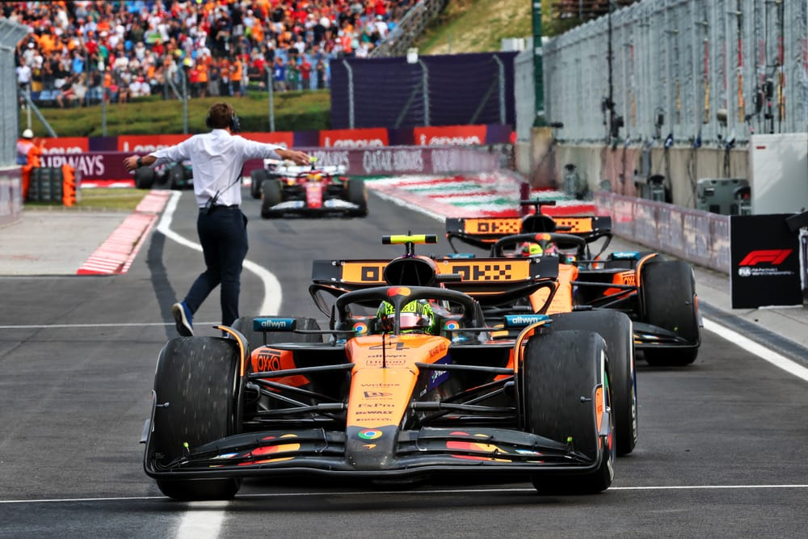
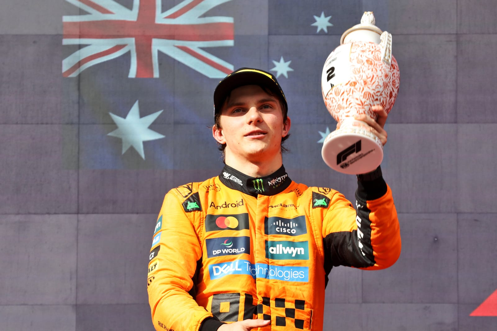

Did McLaren handle Piastri-Norris fight fairly? Our verdict

The McLaren drivers' eventual split-strategy certainly made for a gripping end to Formula 1's Hungarian Grand Prix. But was that strategic split - which ultimately decided the outcome of the race - handled fairly, especially with the two-stopping Oscar Piastri telling McLaren on multiple occasions he wanted the "best chance" to try to beat one-stopping race-winner Lando Norris?

I feel for Piastri. Norris soaked up a lot of pressure late on and did well to make the one-stop work: but lots of drivers did, so that strategy turned out to be perfectly viable, and Norris only really ended up on that strategy because he had a poor opening lap. There might have been something McLaren could have done more sharply with Piastri's strategy. Maybe trying to undercut Charles Leclerc in the first stint was premature. But if it didn't try, we'd likely all be asking why McLaren wasn't aggressive and trying to win the race.